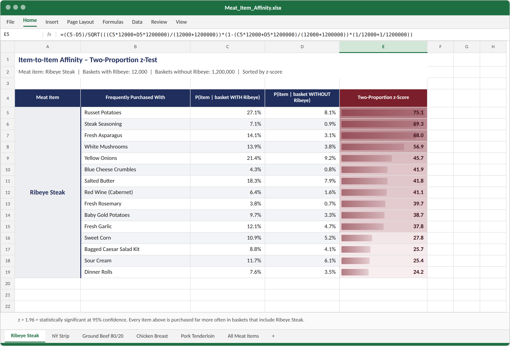

SQL | Two-Proportion z-Test, Market Basket Analysis, Statistical Testing, Merchandising Strategy
Project Completed by: Jackson Bronkema, Fresh Thyme Market (Meijer) Advanced Analytics
Some items naturally sell together. The classic example is meat and potatoes: a customer buying a ribeye steak is much more likely to also buy potatoes than a customer who isn’t buying steak. I wanted to measure these relationships for every meat item sold at Fresh Thyme Market, so the merchandising and marketing teams could use them to build bigger baskets.
I wrote a SQL query that evaluated every meat item sold at Fresh Thyme Market against every non-meat item. For each pair, it compared two probabilities:
A two-proportion z-test then tells us whether the difference between those two probabilities is real or could have happened by chance.
How it works for meat and potatoes: the top of the formula is simply the difference between how often potatoes show up in ribeye baskets and how often they show up everywhere else. The bottom is the standard error, which measures how much that difference would bounce around by random chance alone, based on how common potatoes are overall and how many baskets we looked at. Dividing one by the other tells us how many standard errors apart the two probabilities are. A z-score above 1.96 means the difference is statistically significant at 95% confidence; the larger the z-score, the stronger the evidence that customers buy the two items together on purpose.
A z-score of 75.1 is far above the 1.96 threshold, so customers who buy ribeye steak are buying potatoes much more often than everyone else, and that pattern is not a coincidence.
The query below finds every basket that contains a meat item, pairs it with every non-meat item in the same basket, and calculates both probabilities and the z-score for every pair in a single pass:
-- Two-proportion z-score for every meat item paired with every non-meat item
WITH basket_items AS ( -- one row per item per basket
SELECT DISTINCT t.transaction_id, i.item_id, i.item_desc, i.department
FROM sales_line_items t
JOIN items i ON i.item_id = t.item_id
WHERE t.sale_date >= '2023-01-01'
),
total AS (
SELECT COUNT(DISTINCT transaction_id) AS n_baskets FROM basket_items
),
item_counts AS ( -- number of baskets containing each item
SELECT item_id, COUNT(*) AS baskets FROM basket_items GROUP BY item_id
),
pairs AS ( -- meat item and non-meat item in the same basket
SELECT m.item_id AS meat_id, o.item_id AS other_id, COUNT(*) AS both_cnt
FROM basket_items m
JOIN basket_items o ON o.transaction_id = m.transaction_id
WHERE m.department = 'MEAT' AND o.department <> 'MEAT'
GROUP BY m.item_id, o.item_id
),
props AS (
SELECT p.meat_id, p.other_id,
mc.baskets AS n1, -- baskets WITH the meat item
p.both_cnt AS x1, -- ...that also have the other item
t.n_baskets - mc.baskets AS n2, -- baskets WITHOUT the meat item
oc.baskets - p.both_cnt AS x2 -- ...that have the other item
FROM pairs p
JOIN item_counts mc ON mc.item_id = p.meat_id
JOIN item_counts oc ON oc.item_id = p.other_id
CROSS JOIN total t
)
SELECT meat_id,
other_id,
x1 * 1.0 / n1 AS p_with_meat,
x2 * 1.0 / n2 AS p_without_meat,
(x1 * 1.0 / n1 - x2 * 1.0 / n2)
/ SQRT( ((x1 + x2) * 1.0 / (n1 + n2))
* (1 - (x1 + x2) * 1.0 / (n1 + n2))
* (1.0 / n1 + 1.0 / n2)) AS z_score
FROM props
ORDER BY meat_id, z_score DESC;
Simplified example. Table and column names are illustrative.
The output was summarized in Excel by meat item. Below are the 15 items most strongly purchased with ribeye steak, with the probability of each being in a basket with and without the steak and its two-proportion z-score:

We used these results to change how products were laid out in stores and promoted. When ribeye steak went on sale, we placed potatoes right next to the ribeye in the weekly ad, enticing customers to build their basket around the steak.
The same approach applied to every meat item, giving merchandising a ranked list of the best companion items to pair in the ad and display together in stores.